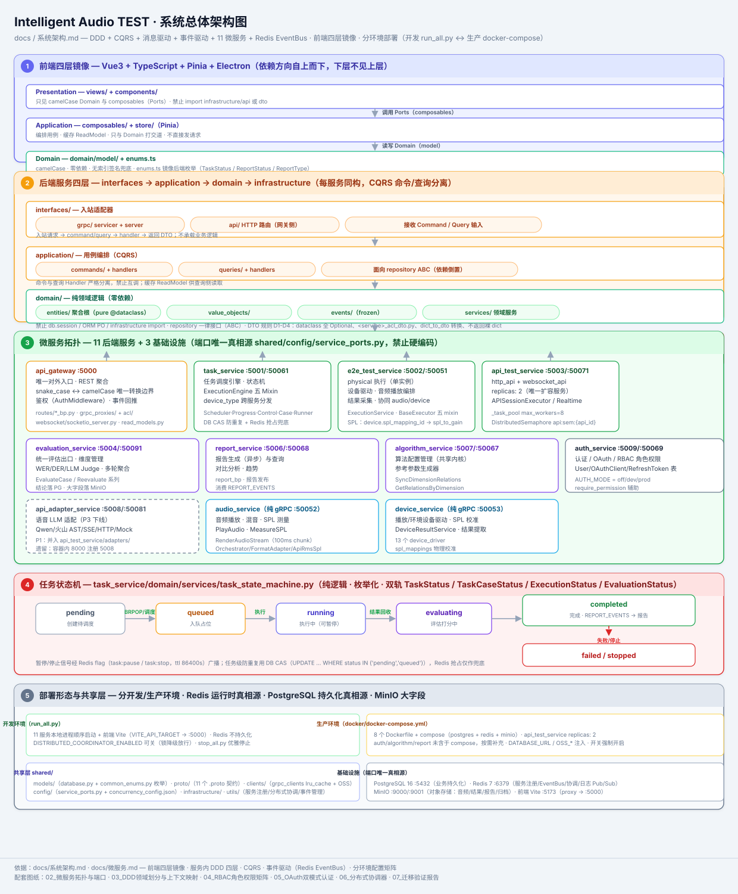
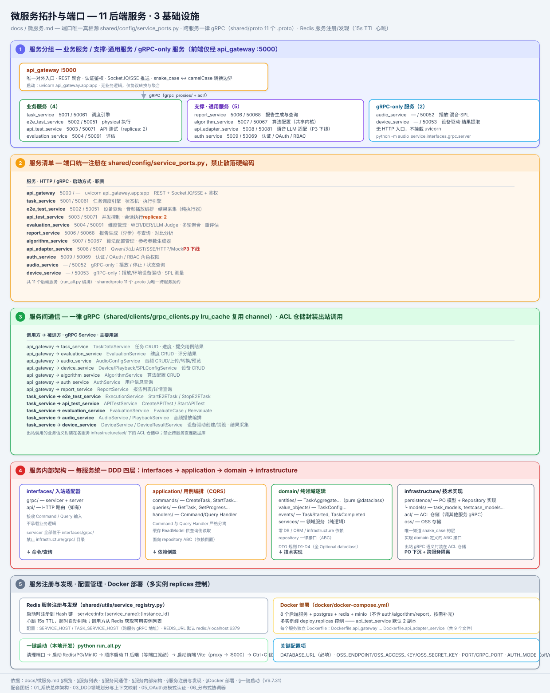
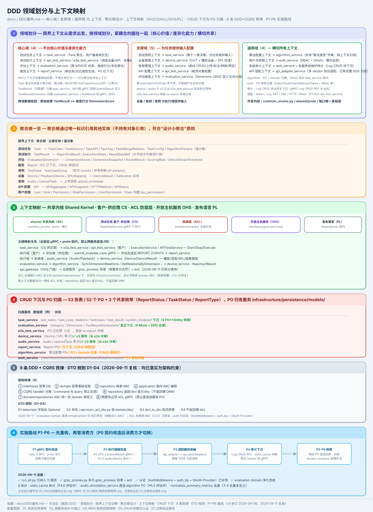
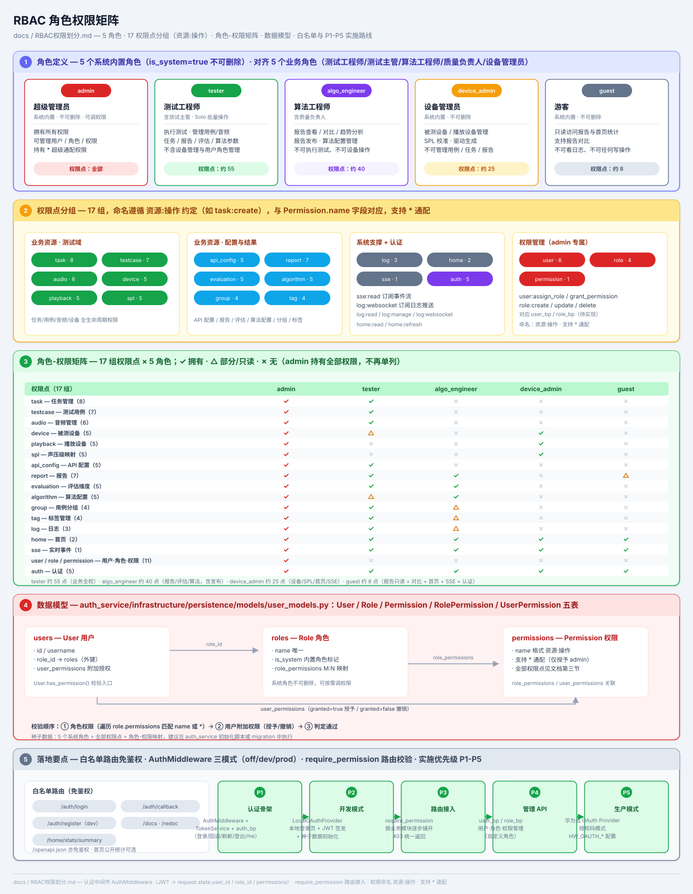
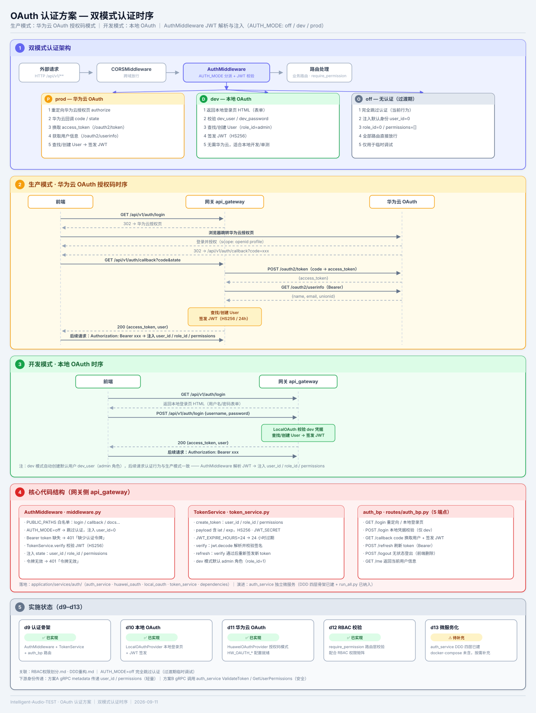
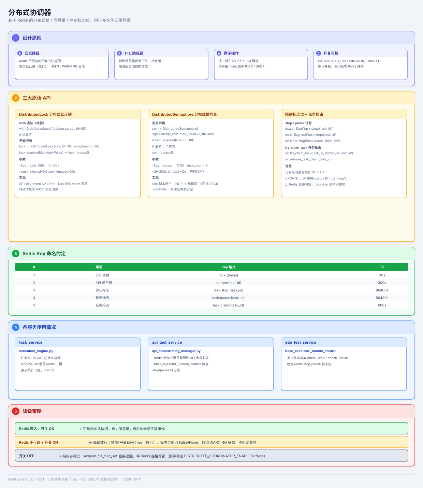
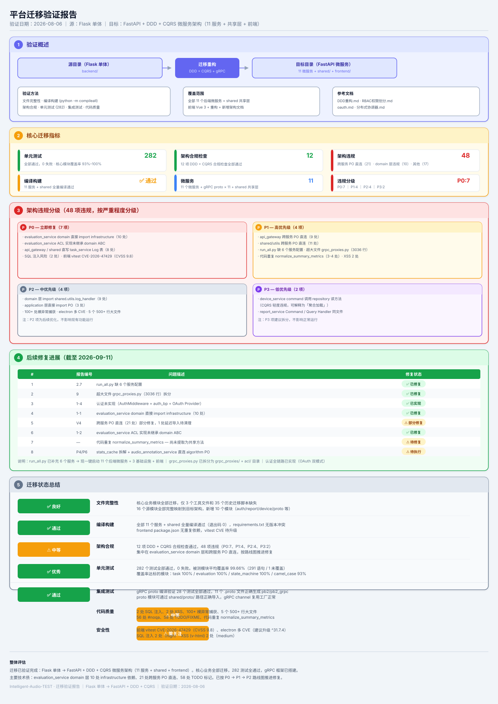

共 7 张 SVG 架构图，对应 docs 目录下 7 份设计文档，点击图片可查看原图。

前端四层镜像、后端服务四层、微服务拓扑、任务状态机、部署形态。
来源：docs/系统架构.md
11 个服务分组与端口规划、gRPC 通信矩阵、服务内部 DDD 四层、注册发现与部署。
来源：docs/微服务.md
领域划分、聚合根一览、上下文映射、CRUD 下沉、8 条铁律、实施路线 P1-P6。
来源：docs/DDD重构.md
5 类角色定义、17 组权限点、角色-权限矩阵（✓/△/✗）、数据模型与落地要点。
来源：docs/RBAC权限划分.md
双模式认证架构、生产模式华为云 OAuth 授权码时序、开发模式本地 OAuth 时序、核心代码结构与实施状态。
来源：docs/oauth.md
设计原则、三大原语 API（锁/信号量/旗标）、Redis Key 命名约定、各服务使用情况与降级策略。
来源：docs/分布式协调器.md
验证概述、核心迁移指标（282 测试 / 12 检查 / 48 违规）、架构违规分级、修复进展与迁移状态总结。
来源：docs/迁移验证报告.md